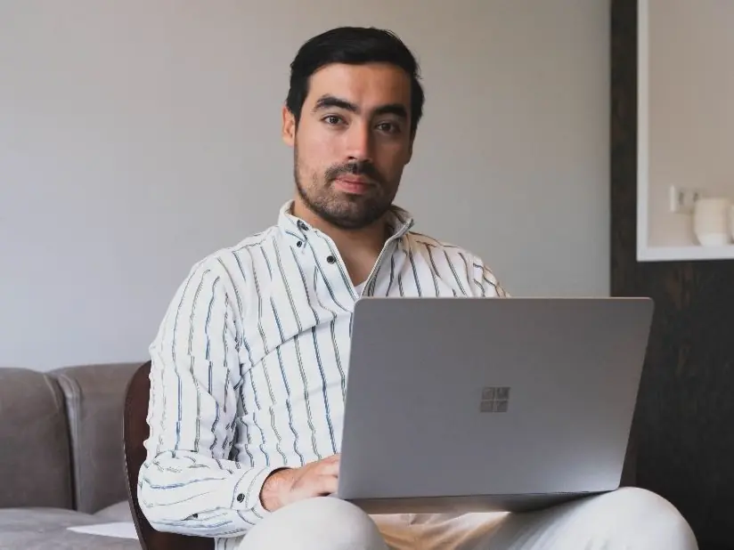

Delft, Delfgauw, Pijnacker, Nootdorp en Rijswijk
Ik kom bij u thuis
Handig voor computerhulp en voor apparaten die u liever niet versjouwt, zoals een afzuigkap of een volautomaat. Ik werk aan uw eigen tafel en leg uit wat ik doe.
Computerhulp aan huis